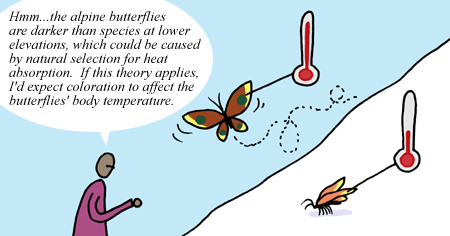

The process of science works at multiple levels — from the small scale (e.g., a comparison of the genes of three closely related North American butterfly species) to the large scale (e.g., a half-century-long series of investigations of the idea that geographic isolation of a population can trigger speciation). The process of science works in much the same way whether embodied by an individual scientist tackling a specific problem, question, or hypothesis over the course of a few months or years, or by a community of scientists coming to agree on broad ideas over the course of decades and hundreds of individual experiments and studies. Similarly, scientific explanations come at different levels:
Hypotheses
Hypotheses are proposed explanations for a fairly narrow set of phenomena. These reasoned explanations are not guesses — of the wild or educated variety. When scientists formulate new hypotheses, they are usually based on prior experience, scientific background knowledge, preliminary observations, and logic. For example, scientists observed that alpine butterflies exhibit characteristics intermediate between two species that live at lower elevations. Based on these observations and their understanding of speciation, the scientists hypothesized that this species of alpine butterfly evolved as the result of hybridization between the two other species living at lower elevations.
Theories
Theories, on the other hand, are broad explanations for a wide range of phenomena. They are concise (i.e., generally don't have a long list of exceptions and special rules), coherent, systematic, predictive, and broadly applicable. In fact, theories often integrate and generalize many hypotheses. For example, the theory of natural selection broadly applies to all populations with some form of inheritance, variation, and differential reproductive success — whether that population is composed of alpine butterflies, fruit flies on a tropical island, a new form of life discovered on Mars, or even bits in a computer's memory. This theory helps us understand a wide range of observations (from the rise of antibiotic-resistant bacteria to the physical match between pollinators and their preferred flowers), makes predictions in new situations (e.g., that treating AIDS patients with a cocktail of medications should slow the evolution of the virus), and has proven itself time and time again in thousands of experiments and observational studies.
"JUST" A THEORY?
Occasionally, scientific ideas (such as biological evolution) are written off with the putdown "it's just a theory." This slur is misleading and conflates two separate meanings of the word theory: in common usage, the word theory means just a hunch, but in science, a theory is a powerful explanation for a broad set of observations. To be accepted by the scientific community, a theory (in the scientific sense of the word) must be strongly supported by many different lines of evidence. So biological evolution is a theory (it is a well-supported, widely accepted, and powerful explanation for the diversity of life on Earth), but it is not "just" a theory.
Words with both technical and everyday meanings often cause confusion. Even scientists sometimes use the word theory when they really mean hypothesis or even just a hunch. Many technical fields have similar vocabulary problems — for example, both the terms work in physics and ego in psychology have specific meanings in their technical fields that differ from their common uses. However, context and a little background knowledge are usually sufficient to figure out which meaning is intended.
Over-arching theories
Some theories, which we'll call over-arching theories, are particularly important and reflect broad understandings of a particular part of the natural world. Evolutionary theory, atomic theory, gravity, quantum theory, and plate tectonics are examples of this sort of over-arching theory. These theories have been broadly supported by multiple lines of evidence and help frame our understanding of the world around us.
Such over-arching theories encompass many subordinate theories and hypotheses, and consequently, changes to those smaller theories and hypotheses reflect a refinement (not an overthrow) of the over-arching theory. For example, when punctuated equilibrium was proposed as a mode of evolutionary change and evidence was found supporting the idea in some situations, it represented an elaborated reinforcement of evolutionary theory, not a refutation of it. Over-arching theories are so important because they help scientists choose their methods of study and mode of reasoning, connect important phenomena in new ways, and open new areas of study. For example, evolutionary theory highlighted an entirely new set of questions for exploration: How did this characteristic evolve? How are these species related to one another? How has life changed over time?
A MODEL EXPLANATION
Hypotheses and theories can be complex. For example, a particular hypothesis about meteorological interactions or nuclear reactions might be so complex that it is best described in the form of a computer program or a long mathematical equation. In such cases, the hypothesis or theory may be called a model.
To see an example of how models of the atmosphere can shape policy, explore Ozone depletion: Uncovering the hidden hazard of hairspray.